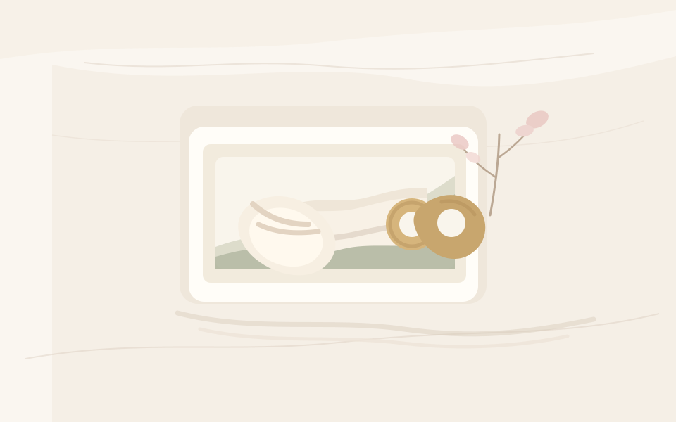

写真だけ
撮った日は残る。でも、何をしていたか、なぜ残したかったかは少しずつ薄れていく。
-
写真のみ
見た目は残るが、親の視点やその日の背景は写真の外にある。
写真1枚から、30秒で残す育児記録
子どもとの今日が、10年後の宝物になる。
寝かしつけのあと、もう書く気力がない日も。写真を1まい選ぶだけ。 必要なら Hana が静かな下書きにして、あとで読み返せるページに残します。
AI は同意後だけ。使わずに保存でき、保存前にことばを直せます。

机の上に残った小さなくつした。忙しかった今日も、あとで開ける小さなページにします。
実ユーザー写真ではない synthetic preview です。
きれいな作品づくりではなく、ありのままの日常写真が、 あとで戻れるページになることを大切にします。
撮った日は残る。でも、何をしていたか、なぜ残したかったかは少しずつ薄れていく。
見た目は残るが、親の視点やその日の背景は写真の外にある。
写真に、短いタイトルと本文を添えて、あとで開ける小さなページにする。
あとで一覧でも、その日の場面をすぐ思い出せる。
洗濯ものをたたむ前、木のくるまをそっと横に置いた。何でもない朝の支度が、 あとで開ける小さなページになった。
人間レビュー済みの synthetic 例。AI 生成本文や実ユーザー情報ではありません。
30秒の価値は速さだけではなく、判断を少なくすることにあります。 写真、同意済みの場合の下書き、保存の順に、いま必要な一つだけを見せます。
完璧な写真を探さなくていい。今日の1まいから始めます。
AI は主役にしない。使わない場合は、ひとことだけで保存できます。
タイトルやことばはあとで直せる。保存したらアルバムにしまえます。
ホーム、記録、アルバム、詳細は、写真台紙と静かな導線を中心にしています。 使うほど、公開する場所ではなく、戻ってこられる場所になります。


子どもの写真と感情の記録を預かる LP は、便利さより先に不安を増やさないことが大切です。